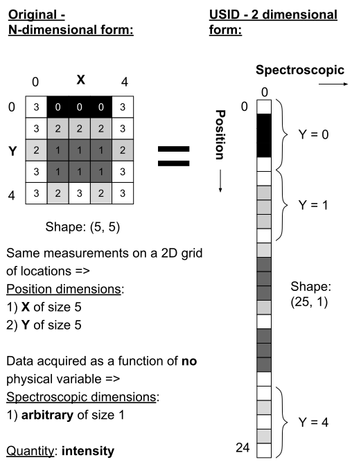
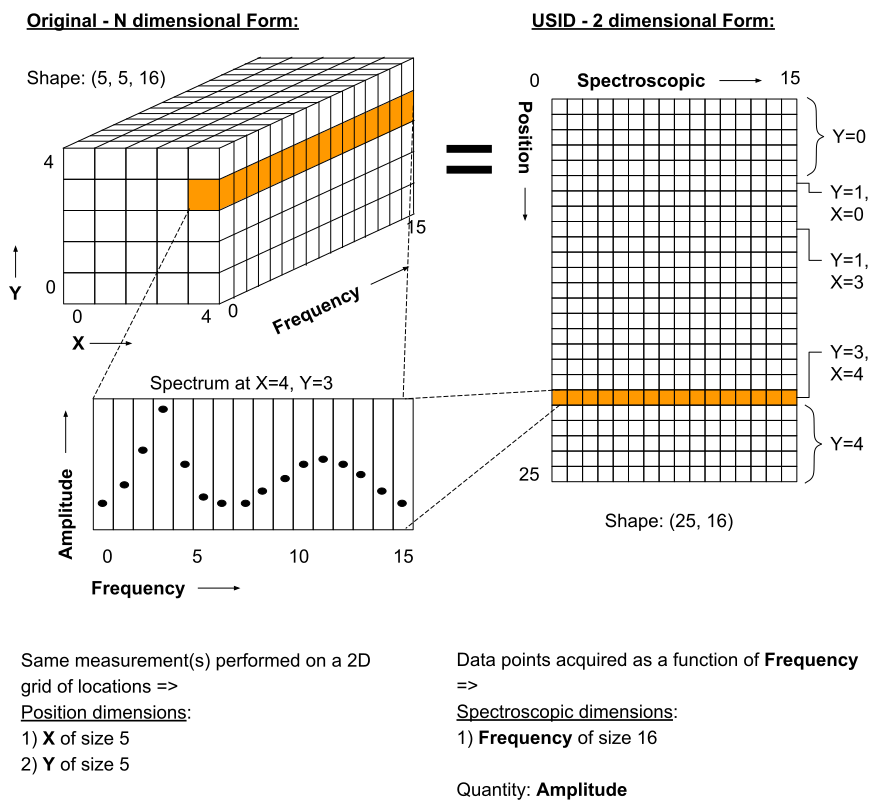

Data Model and File Format¶
Suhas Somnath
8/8/2017
In this document we aim to provide a comprehensive overview of the motivation for and specifications of the Universal Spectroscopy and Imaging Data (USID) Model and the file format (h5USID) used for storing spectroscopy and imaging data.
Pycroscopy uses the USID model and h5USID files.
Dr. Stephen Jesse conceived the USID while Dr. Suhas Somnath and Chris R. Smith implemented USID into hierarchical data format (HDF5) files using python in pyUSID
Contents
Nomenclature¶
Before we start off, lets clarify some nomenclature to avoid confusion.
Data model¶
Data model refers to the way the data is arranged. This does not depend on the implementation in a particular file format
File format¶
This corresponds to the kind of file, such as a spreadsheet (.CSV), an image (.PNG), a text file (.TXT) within which information is contained.
Data format¶
data format is actually a rather broad term. However, we have observed that
people often refer to the combination of a data model implemented within a file format as a data format.
Measurements¶
In all measurements, some quantity such as voltage, resistance, current, amplitude, or intensity is collected
as a function of (typically all combinations of) one or more independent variables. For example, a gray-scale image represents the
quantity - intensity being recorded for all combinations of the variables - row and column. A (simple) spectrum represents
a quantity such as amplitude or phase recorded as a function of a reference variable such as wavelength or frequency.
Data collected from measurements result in N-dimensional datasets where each dimension corresponds to a variable that
was varied. Going back to the above examples a gray-scale image would be represented by a 2 dimensional dataset whose
dimensions are row and column. Similarly, a simple spectrum wold be a 1 dimensional dataset whose sole dimension would
be frequency for example.
Dimensionality¶
- We consider data recorded for all combinations of 2 or more variables as
multi-dimensionaldatasets orNth order tensors:- For example, if a single value of current is recorded as a function of driving / excitation bias or voltage having B values, the dataset is said to be
1 dimensionaland the dimension would be -Bias. - If the bias is cycled C times, the data is said to be
two dimensionalwith dimensions -(Bias, Cycle). - If the bias is varied over B values over C cycles at X columns and Y rows in a 2D grid of positions, the resultant dataset would have
4 dimensions:(Rows, Columns, Cycle, Bias).
- For example, if a single value of current is recorded as a function of driving / excitation bias or voltage having B values, the dataset is said to be
Multi-feature: As a different example, let us suppose that thepetal width,length, andweightwere measured forFdifferent kinds of flowers. This would result in a1 dimensional datasetwith the kind of flower being the sole dimension. Such a dataset is not a 3 dimensional dataset because thepetal width, length, andweightare only differentfeaturesfor each measurement. Some quantity needs to be measured for all combinations of petal width, length, and weight to make this dataset 3 dimensional. Most examples observed in data mining, simple machine learning actually fall into this category
Why should you care?¶
The quest for understanding more about matter has necessitated the development of a multitude of instruments, each capable of numerous measurement modalities.
Proprietary file formats¶
Typically, each commercial instruments generates data files formatted in proprietary file formats by the instrument manufacturer. The proprietary nature of these file formats and the obfuscated data model within the files impede scientific progress in the following ways:
- By making it challenging for researchers to extract data from these files
- Impeding the correlation of data acquired from different instruments.
- Inability to store results back into the same file
- Inflexibility to accommodate few kilobytes to several gigabytes of data
- Requiring different versions of analysis routines for each data format
- In some cases, requiring proprietary software provided with the instrument to access the data
Future concerns¶
- Several fields are moving towards the open science paradigm which will require journals and researchers to support journal papers with data and analysis software
- US Federal agencies that support scientific research require curation of datasets in a clear and organized manner
Other problems¶
- The vast majority of scientific software packages (e.g. X-array) aim to focus at information already available in memory. In other words they do not solve the problem of storing data in a self-describing manner and reading + processing this data.
- There are a few file formatting packages and approaches (Nexus, NetCDF). However, they are typically narrow in scope and only solve the data formatting for specific communities
- Commercial image analysis software are often woefully limited in their capabilities and only work on simple 1, 2, and in some cases- 3D datasets. There are barely any software for handling arbitrarily large multi-dimensional datasets.
- In many cases, especially electron and ion based microscopy, the very act of probing the sample damages the sample. To minimize damage to the sample, researchers only sample data from a few random positions in the 2D grid and use advanced algorithms to reconstruct the missing data. We have not come across any robust solutions for storing such Compressed sensing / sparse sampling data. More in the Advanced Topics section.
Universal Spectroscopy and Imaging Data (USID) Model¶
To solve the above and many more problems, we have developed an instrument agnostic data model that can be used to represent data from any instrument, size, dimensionality, or complexity.
Information in USID are stored in three main kinds of datasets:
Maindatasets that contain the raw measurements recorded from the instrument as well as results from processing or analysis routines applied to the data- Mandatory
Ancillarydatasets that are necessary to explain themaindata Extradatasets store any other data that may be of value
In addition to datasets, the data model is highly reliant on metadata that capture
smaller pieces but critical pieces of information such as the
quantity and units that describe every data point in the main dataset.
We acknowledge that this data model is not trivial to understand at first glance but we are making every effort to make is simple to understand. If you ever find anything complicated or unclear, please write to us and we will improve our documentation.
Main Datasets¶
Regardless of origin, modality or complexity, imaging data (and most scientific data for that matter) have one thing in common:
The same measurement / operation is performed at each spatial position
The USID model is based on this one simple ground-truth.
The data always has some spatial dimensions (X, Y, Z) and some
spectroscopic dimensions (time, frequency, intensity, wavelength,
temperature, cycle, voltage, etc.). In USID, the spatial
dimensions are collapsed onto a single dimension and the spectroscopic
dimensions are flattened into the second dimension. Thus, all data are
stored as two dimensional arrays. The data would be arranged in the same manner that
reflects the sequence in which the individual data points were collected. Examples below
will simplify this data-representation paradigm significantly.
In general, if a measurement of length P was recorded for each of N positions,
it would be structured as shown in the table below here the prefixes i correspond to
the positions and j for spectroscopic:
| i0, j0 | i0, j1 | i0, j2 | <..> | i0, jP-2 | i0, jP-1 |
| i1, j0 | i1, j1 | i1, j2 | <..> | i1, jP-2 | i1, jP-1 |
| <……> | <……> | <……> | <..> | <……..> | <……..> |
| iN-2, j0 | iN-2, j1 | iN-2, j2 | <..> | iN-2, jP-2 | iN-2, jP-1 |
| iN-1, j0 | iN-1, j1 | iN-1, j2 | <..> | iN-1, jP-1 | iN-1, jP-1 |
A notion of chronology is attached to both the position and spectroscopic axes. In other words, the data for the second location (second row in the above table) was acquired before the first location (first row). The same applies to the spectroscopic axis as well. This is an important point to remember especially when information is recorded from multiple sources or channels (e.g. - data from different sensors) or if two or more numbers are necessary to give a particular observation / data point its correct meaning (e.g. - color images). This point will be clarified via examples that follow.
While the data could indeed be stored in the original N-dimensional form, there are a few key advantages to the 2D structuring:
- The data is already of the same structure expected by machine learning algorithms and requires minimal
to no pre-processing or post-processing. Briefly, the data is simply arranged in the standard form of
instances x features, whereinstancesmakes up the locations andfeatureswhich contains all the observables per entry. - In certain cases, the data simply cannot be represented in an N-dimensional form since one of the dimensions has multiple sizes in different contexts.
- Researchers want to acquire ever larger datasets that take much longer to acquire. This has necessitated approaches such as sparse sampling or compressed sensing wherein measurements are acquired from a few randomly sampled positions and the data for the rest of the positions are inferred using complex algorithms. Storing such sparse sampled data in the N dimensional form would balloon the size of the stored data even though the majority of the data is actually empty. Two dimensional datasets would allow the random measurements to be written without any empty sections.
- When acquiring measurement data, users often adjust experimental parameters during the experiment that may affect the size of the data, especially the spectral sizes. Thus, changes in experimental parameters would mean that the existing N dimensional set would have to be left partially (in most cases largely) empty and a new N dimensional dataset would have to be allocated with the first few positions left empty. In the case of flattened datasets, the current dataset can be truncated at the point of the parameter change and a new dataset can be created to start from the current measurement. Thus, no space would be wasted.
Here are some examples of how some familiar data can be represented using this paradigm:
Spectrum¶
This case encompasses examples such as a single Raman spectrum, force-distance curve in
atomic force microscopy, current-voltage spectroscopy, etc. In this case, the measurement is recorded
at a single location meaning that this dataset has a single arbitrary position dimension
of size 1. At this position, data is recorded as a
function of a single variable (spectroscopic dimension) such as wavelength or frequency.
Thus, if the spectrum contained S data points, the USID representation of this
data would be a 1 x S matrix. The quantity represented in this data would be Amplitude.
Gray-scale images¶
In such data, a single value (quantity is intensity) in is recorded
at each location in a two dimensional grid. Thus, there are are two
position dimensions - X, Y. The value at each pixel was not really acquired
as a function of any variable so the data has one arbitrary spectroscopic dimension.
Thus, if the image had P rows and Q columns, it would have to be flattened and
represented as a P*Q x 1 array according to the USID model. The second
axis has size of 1 since we only record one value (intensity) at each
location. In theory, the flattened data could be arranged column-by-column (as in the figure above)
and then row-by-row or vice-versa depending on how the data was (sequentially)
captured. The sequence in this particular case is debatable in this particular example.
Popular examples of such data include imaging data from raster scans (e.g. - height channel in atomic force microscopy), black-and-white photographs, scanning electron microscopy (SEM) images. etc.
Color images will be discussed separately below due to some very important subtleties about the measurement.
Spectral maps¶
If a spectrum of length S were acquired at each location in a two dimensional grid of positions
with P rows and Q columns, it would result in a three dimensional dataset.
This example is a combination of the two examples above. The above 3D dataset has two
position dimensions - X and Y, and has one spectroscopic dimension - Frequency.
Each data point in the dataset contains the same physical quantity - Amplitude.
In order to represent this 3D dataset in the 2D USID form, the two position dimensions
in such data would need to be flattened along the vertical axis and the spectrum at each position
would be laid out along the horizontal axis or the spectroscopic axis.
Thus the original P x Q x S 3D array would be flattened to a 2D array of shape - P*Q x S.
Assuming that the data was acquired column-by-column and then row-by-row, the rows in the flattened
2D dataset would also be laid out in the same manner: row0col0, row0col1, row0col2,
… , row0colQ, row1col0, row1col1, …
Popular examples of such datasets include Scanning Tunnelling Spectroscopy (STS) and current-voltage spectroscopy
High dimensional data¶
This general representation for data was developed to express datasets with 7, 8, 9, or higher dimensional datasets.
The spectral map example above only had one spectroscopic dimension. If spectra of length S were
acquired for T different Temperatures, the resultant dataset would have two spectroscopic dimensions -
Frequency and Temperature and would be of shape - P x Q x T x S. Just as the two position dimensions
were flattened along the vertical axis in the example above, now the two spectroscopic dimensions would also need
to be flattened along the horizontal axis. Thus the horizontal axis would be flattend as:
Temperature0Frequency0, Temperature0Frequency1,Temperature0Frequency2, …
, Temperature0FrequencyS, Temperature1Frequency0, Temperature1Frequency1, …
This four dimensional dataset would be flattened into a two dimensional array of shape P*Q x T*S.
In the same manner, one could keep adding additional dimensions to either the position or spectroscopic axis.
Non Measurements¶
This same flattened representation can also be applied to results of data analyses or data that were not directly recorded from an instrument. Here are some examples:
- A collection of
kchosen spectra would also be consideredMaindatasets since the data is still structured as[instance, features] - Similarly, the centroids obtained from a clustering algorithm like
k-Means clustering - The abundance maps obtained from decomposition algorithms like
Singular Value Decomposition (SVD)orNon-negative matrix factorization (NMF)
Complicated?¶
This data model may seem unnecessarily complicated for very simple / rigid data such as 2D images or 1D spectra. However, bear in mind that this paradigm was designed to represent any information regardless of dimensionality, origin, complexity, etc. Thus, encoding data in this manner will allow seamless sharing, exchange, and interpretation of data.
Compound Datasets:¶
There are instances where multiple values are associate with a single position and spectroscopic value in a dataset. In these cases, we use the compound dataset functionality in HDF5 to store all of the values at each point. This also allows us to access any combination of the values without needing to read all of them. Pycroscopy actually uses compound datasets a lot more frequently than one would think. The need and utility of compound datasets are best described with examples:
Color images: Each position in these datasets contain three (red, blue, green) or four (cyan, black, magenta, yellow) values. One would naturally be tempted to simply treat these datasets as
N x 3orN x 4datasets, (whereNis the product of the number of rows and columns as in the gray-scale image example above) and it certainly is not wrong to represent data this way. However, storing the data in this manner would mean that the red intensity was collected first, followed by the green, and finally by the blue. In other words, a notion of chronology is attached to both the position and spectroscopic axes according to the USID definition. While the intensities for each color may be acquired sequentially in detectors, since we are not aware of the exact sequence we will assume that the red, green, and blue values are acquired simultaneously for simultaneously.In these cases, we store data using
compound datasetsthat allow the storage of multiple pieces of data within the samecell. While this may seem confusing or implausible, remember that computers store complex numbers in the same way. The complex numbers have a real and an imaginary component just like color images have red, blue, and green components that describe a single pixel. Therefore, color images in the USID representation would be represented by aN x 1matrix with compound values instead of aN x 3matrix with real or integer values. For example, one would refer to the red component at a particular position as:red_value = dataset_name[position_index, spectroscopic_index]['red']
Functional fits: Let’s take the example of a dataset flattened to shape -
N x P, whose spectra at each location are fitted to a complicated equation. Now, thePpoints in the spectra will be represented byScoefficients that don’t necessarily follow any order. Consequently, the result of the functional fit should actually be aN x 1dataset where each element is a compound value made up of theScoefficients. Note that while some form of sequence can be forced onto the coefficients if the spectra were fit to polynomial functions, the drawbacks outweigh the benefits:- Slicing: Storing data in compound datasets circumvents problems associated
with getting a specific / the
kthcoefficient if the data were stored in a real-valued matrix instead. - Visualization also becomes a lot simpler since compound datasets cannot be plotted without specifying the component / coefficient of interest. This avoids plots with alternating coefficients that are several orders of magnitude larger / smaller than each other.
- Slicing: Storing data in compound datasets circumvents problems associated
with getting a specific / the
While one could represent multiple channels of information simultaneously acquired by instruments (for example - height, amplitude, phase channels in atomic force microscopy scan images) using compound datasets, this is not the intended purpose of compound datasets. We use recommend storing each channel of information separately for consistency across scientific disciplines. For example, there are modalities in microscopy where some channels provide high resolution topography data while others provide low-resolution but spectroscopy data.
For more information on compound datasets see the h5py Datasets documentation from the HDF Group.
Ancillary Datasets¶
So far we have explained how the (main) dataset of interest can be flattened and represented
regardless of its origin, size, dimensionality, etc. In order to make this
main dataset self-explanatory, additional pieces of information are required.
For example, while the main dataset preserves the data of interest, information regarding the
original dimensionality of the data or the combination of parameters corresponding to each
observation is not captured.
In order to capture such vital information, each main dataset is always accompanied by
four ancillary datasets. These are the:
- The
Position ValuesandPosition Indicesthat describe the index and value of any given row or spatial position in themaindataset. - The
Spectroscopic ValuesandSpectroscopic Indicesthat describe the index and values all columns in themaindataset for all spectroscopic dimensions.
The pair of Values datasets are analogous to legends for maps. In other words, the pair of
Values datasets provide the combination of the values for each dimension / variable
that correspond to a particular data point in the main dataset. For example, one
would be able to understand readily that a particular data point in the main dataset
was acquired for the reference values of Frequency of 315 kHz, Temperature of 400 K
from the Spectroscopic Values dataset and location X of 7.125 microns and Y of
480 nanometers from the Position Values dataset.
The pair of Indices datasets are essentially counters for each position
and spectroscopic dimension / variable. Continuing the example presented for the Values
datasets, let’s assume that the data was acquired as a function of all unique combinations of
37 Frequency values, 12 Temperatures, 64 locations in the X direction
and 128 values in the Y direction. Then, the Spectroscopic Indices dataset would
instruct that the given data point in the main dataset corresponds to the 13th
Frequency value and 5th Temperature value. In the same way, the Position Indices
dataset would show that the data point of interest corresponds to the 47th value of X
and 106th value of Y.
The pair of Indices datasets are critical for explaining:
- the original dimensionality of the dataset
- how to reshape the data back to its N dimensional form
Much like main datasets, the ancillary datasets are also two
dimensional matrices regardless of the number of position or
spectroscopic dimensions. Given a main dataset with N positions,
each containing P spectral values (shape = (N x P)), and having
U position dimensions and V spectroscopic dimensions:
- The
Position IndicesandPosition Valuesdatasets would both of the same size ofN x U, whereUis the number ofposition dimensions. The columns would be arranged in ascending order of rate of change. In other words, the first column would be the fastest changing position dimension and the last column would be the slowest. Each position dimension gets it’s own column. - The
Spectroscopic ValuesandSpectroscopic Indicesdataset would both beV x Sin shape, whereVis the number ofspectroscopic dimensions. Similarly to theposition dimensions, the first row would be the fastest changingspectroscopic dimensionwhile the last row would be the slowest varying dimension. Each spectroscopic dimension gets it’s own row.
The ancillary datasets are better illustrated via a few examples. We will
be continuing with the same examples used when illustrating the main dataset.
Spectrum¶
Let’s assume that data points were collected as a function of 8 values of the (sole) variable / spectroscopic dimension -
Frequency. In that case, the Spectroscopic Values dataset would be of size 1 x 5 (one row for the single
spectroscopic dimension and eight columns for each of the reference Frequency steps.
Let’s assume that the data was collected as a function of Frequency over a band ranging from 300 to 320 kHz.
In that case, the Spectroscopic Values would be as shown below:
| Frequency | 300 | 305 | 310 | 315 | 320 |
This means that for all positions in the main dataset, the 4th column would always correspond to data collected
for the Frequency of 315 kHz.
As the name suggests, the Spectroscopic Indices dataset only shows the indices for the steps in the dimension.
In this particular case, the dataset is trivial and just a linearly increasing array.
Note that indices start from 0 instead of 1 and
end at 5-1 instead of 5 in line with common programming languages such as C or python as shown below:
| Frequency | 0 | 1 | 2 | 3 | 4 |
Given that the spectrum only had a single arbitrary position dimension which was varied over a single (arbitrary)
value, the Position Indices and Position Values datasets would have a shape of 1 x 1.
Position Indices:
| arb. |
|---|
| 0 |
Position Values:
| arb. |
|---|
| 0.0 |
Gray-scale image¶
A simple gray-scale image with X pixels in the horizontal and Y pixels in the vertical
direction would have ancillary position
datasets of shape X*Y x 2. The first column in the ancillary position
datasets would correspond to the index / values of the dimension - X
(assuming that it is the dimension that varies fastest)
and the second column in the ancillary position dataset would be the dimension - Y
assuming that the data was collected column-by-column and then row-by-row just as in the example above.
If the original image had 3 pixels in the horizontal direction and 2 pixels in the vertical direction,
the corresponding Position Indices dataset would be:
| X | Y |
|---|---|
| 0 | 0 |
| 1 | 0 |
| 2 | 0 |
| 0 | 1 |
| 1 | 1 |
| 2 | 1 |
Notice that the index for X is reset to 0 when Y is incremented from 0 to 1 in the fourth row.
As mentioned earlier, the data in such Indices datasets are essentially counters.
Correspondingly, if the measurements were performed at X locations:
0.0, 1.5, and 3.0 microns and Y locations: -70 and 23 nanometers,
the Position Values dataset may look like the table below:
| X | Y |
|---|---|
| 0.0 | -70.0 |
| 1.5 | -70.0 |
| 3.0 | -70.0 |
| 0.0 | 23.0 |
| 1.5 | 23.0 |
| 3.0 | 23.0 |
Thus, the 5th row in the main dataset for this gray-scale image would correspond to data collected
at X = 1.5 microns and Y = 23 nanometers according to the Position Values dataset.
Note that X and Y dimensions have different units - microns and nanometers.
Pycroscopy has been designed to handle variations in the units for
each of these dimensions. Details regarding how and where to store
the information regarding the labels (‘X’, ‘Y’) and units for
these dimensions (‘um’, ‘nm’) will be discussed in the Implementation section.
Similar to the position dimensions for a spectrum, gray-scale images only have a single arbitrary
spectroscopic dimension. Thus, both Spectroscopic datasets have shape of 1 x 1:
Spectroscopic Indices:
| arb. | 0 |
Spectroscopic Values:
| arb. | 0 |
Spectral maps¶
Let’s continue the example on spectral maps, which has two position
dimensions - X and Y, and one spectroscopic dimension - Frequency.
If the dataset was varied over 3 values of X, 2 values of Y and 5 values of Frequency, the
ancillary datasets would be based on the solutions for the two examples above:
Position Indices:
| X | Y |
|---|---|
| 0 | 0 |
| 1 | 0 |
| 2 | 0 |
| 0 | 1 |
| 1 | 1 |
| 2 | 1 |
Position Values:
| X | Y |
|---|---|
| 0.0 | -70.0 |
| 1.5 | -70.0 |
| 3.0 | -70.0 |
| 0.0 | 23.0 |
| 1.5 | 23.0 |
| 3.0 | 23.0 |
Spectroscopic Indices:
| Frequency | 0 | 1 | 2 | 3 | 4 |
Spectroscopic Values:
| Frequency | 300 | 305 | 310 | 315 | 320 |
High dimensional data¶
Continuing with the expansion of the spectral maps example - if the data was recorded as a function of 3
Temperatures in addition to recording data as a function of Frequency as in the above example, we wold have two
spectroscopic dimensions - Frequency, and Temperature. Thus, the ancillary spectroscopic datasets would
now have a shape of 2 x 5*3 instead of the simpler 1 x 5. The value 2 on the first index corresponds to
the two spectroscopic dimensions and the longer (15 instead of 5) second axis corresponds to the fact
that the spectra is now recorded thrice at each position (once for each Frequency). Assuming that the Frequency
varies faster than the Temperature dimension (i.e.- the Frequency is varied from 300 to 320 for a
Temperature of 30 C, then the Frequency is varied from 300 to 320 for a Temperature of 40 C
and so on), the Spectroscopic Indices would be as follows:
| Frequency | 0 | 1 | 2 | 3 | 4 | 0 | 1 | 2 | 3 | 4 | 0 | 1 | 2 | 3 | 4 |
| Temperature | 0 | 0 | 0 | 0 | 0 | 1 | 1 | 1 | 1 | 1 | 2 | 2 | 2 | 2 | 2 |
Correspondingly, the Spectroscopic Values would look like:
| Frequency | 300 | 305 | 310 | 315 | 320 | 300 | 305 | 310 | 315 | 320 | 300 | 305 | 310 | 315 | 320 |
| Temperature | 30 | 30 | 30 | 30 | 30 | 40 | 40 | 40 | 40 | 40 | 50 | 50 | 50 | 50 | 50 |
Since the manner and values over which the positions are varied remains unchanged from the spectral maps example,
the Position Indices and Position Values datasets for this example would be identical those of the spectral maps example
A simple glance at the shape of the ancillary datasets for this (or any) example would be enough to
reveal that the data has two position dimensions (two columns in the Position Indices dataset) and
two spectroscopic dimensions (two rows in the Spectroscopic Indices dataset)
dataset)
In the same manner, additional dimensions can be added to the main and appropriate ancillary datasets
thus proving that this data model can indeed accommodate data of any size, complexity, or dimensionality.
Channels¶
The USID model also allows the representation and capture of information acquired
simultaneously from multiple sources through Channels.
Each Channel would contain a separate main dataset. Ancillary datasets
can be shared across channels if the position or spectroscopic dimensions are identical.
As alluded to earlier, the most popular example many people can relate to are the various channels
of information recorded during a conventional scanning probe microscopy raster scan (Height, Amplitude, Phase).
For this example, all the channels could share the same set of four ancillary datasets.
It is not necessary that rate of acquisition match across channels. For example, one
channel could be a high-resolution topography scan (similar to 2D gray-scale image)
while another channel could contain spectra collected at each location on a
coarser grid of positions (3D spectral-map dataset). In this case, the two
channels may not be able to share ancillary datasets.
Specifics regarding the implementation of different channels will be discussed in a later section.
File Format¶
Requirements¶
No one really wants yet another file format in their lives. We wanted to adopt a file format that satisfies some basic requirements:
- already widely accepted in scientific research
- support parallel read and write capabilities.
- store multiple datasets of different shapes, dimensionalities, precision and sizes.
- scale very efficiently from few kilobytes to several terabytes
- can be (readily) read and modified using any language including Python, R, Matlab, C/C++, Java, Fortran, Igor Pro, etc. without requiring installation of modules that are hard to install
- store and organize data in a intuitive and familiar hierarchical / tree-like structure that is similar to files and folders in personal computers.
- facilitates storage of any number of experimental or analysis parameters in addition to regular data.
- highly flexible and poses minimal restrictions on how the data can and should be stored.
- readily compatible with high-performance computing (
HPC) and (soon) cloud-computing.
Candidates¶
- We found that existing file formats in science such as the Nexus data format,
XDMF, and NetCDF:
- were designed for specific / narrow scientific domains only and we did not want to shoehorn our data structure into those formats.
- Furthermore, despite being some of the more popular scientific data formats, it is not immediately straightforward to read those files on every computer using any programming language. For example - the Anaconda python distribution does not come with any packages for reading these file formats.
- Adios is perhaps the ultimate file format for storing petabyte sized data on supercomputers but it was specifically designed for simulations, check-pointing, and it trades flexibility, and ease-of-use for performance.
- The hierarchical data format (HDF5) is the implicitly or explicitly the de-facto standard in scientific research. In fact, Nexus, NetCDF, and even Matlab’s .mat files are actually (now) just custom flavors of HDF5 thereby validating the statement that HDF5 is the unanimous the file format of choice
- The DREAM.3D is yet another group that uses HDF5 as the base container to store their data. We are currently evaluating compatibility with and feasibility of their data model.
We found that HDF5, works best for us compared to the alternatives. Hence, we have implemented the USID model into the HDF5 file format and such file will be referred to as h5USID files.
We acknowledge that it is nearly impossible to find the perfect file format and HDF5 too has its fair share of drawbacks. One common observation among file formats is that a file format optimized for the cloud or cluster computing often does not perform well (or at all) on HPC due to the conflicting nature of the computing paradigms. As of this writing, HDF5 is optimized for HPC and not for cloud-based applications. For cloud-based environments it is beneficial to in fact break up the data into small chunks that can be individually addressed and used. We think Zarr and N5 would be good alternatives; however, most of these file formats are very much in their infancy and have not proven themselves like HDF5 has. This being said, the HDF organization just announced a cloud flavor of HDF5 and we plan to look into this once h5py or other python packages support such capabilities.
h5USID - USID in HDF5¶
Here we discuss guidelines and specifications for implementing the USID model into HDF5 files. While we could impose that the file extension be changed from .hdf5 to .h5USID, we choose to retain the .hdf5 extension so that other software are aware of the general file type and can recognize / read them easily.
Quick basics of HDF5¶
Information can be stored in HDF5 files in several ways:
Datasetsallow the storage of data matrices and these are the vessels used for storing themain,ancillary, and any extra data matricesGroupsare similar to folders in conventional file systems and can be used to store any number of datasets or groups themselvesAttributesare small pieces of information, such as experimental or analytical parameters, that are stored in key-value pairs in the same way as dictionaries in python. Both groups and datasets can store attributes.- While they are not means to store data,
Linksorreferencescan be used to provide shortcuts and aliases to datasets and groups. This feature is especially useful for avoiding duplication of datasets when twomaindatasets use the same ancillary datasets.
Main data:¶
Dataset structured as (positions x time or spectroscopic values)
dtype: uint8, float32, complex64, compound if necessary, etc.- Required attributes:
quantity- Single string that explains the data. The physical quantity contained in each cell of the dataset – eg – ‘Current’ or ‘Deflection’units– Single string for units. The units for the physical quantity like ‘nA’, ‘V’, ‘pF’, etc.Position_Indices- Reference to the position indices datasetPosition_Values- Reference to the position values datasetSpectroscopic_Indices- Reference to the spectroscopic indices datasetSpectroscopic_Values- Reference to the spectroscopic values dataset
- chunking : HDF group recommends that chunks be between 100 kB to 1 MB. We recommend chunking by whole number of positions since data is more likely to be read by position rather than by specific spectral indices.
Note that we are only storing references to the ancillary datasets. This
allows multiple main datasets to share the same ancillary datasets
without having to duplicate them.
Ancillary data:¶
Position_Indices structured as (positions x spatial dimensions)
- dimensions are arranged in ascending order of rate of change. In other words, the fastest changing dimension is in the first column and the slowest is in the last or rightmost column.
dtype: uint32- Required attributes:
labels- list of strings for the column names like [‘X’, ‘Y’]units– list of strings for units like [‘um’, ‘nm’]
- Optional attributes: * Region references based on column names
Position_Values structured as (positions x spatial dimensions)
- dimensions are arranged in ascending order of rate of change. In other words, the fastest changing dimension is in the first column and the slowest is in the last or rightmost column.
dtype: float32- Required attributes:
labels- list of strings for the column names like [‘X’, ‘Y’]units– list of strings for units like [‘um’, ‘nm’]
- Optional attributes: * Region references based on column names
Spectroscopic_Indices structured as (spectroscopic dimensions x
time)
- dimensions are arranged in ascending order of rate of change. In other words, the fastest changing dimension is in the first row and the slowest is in the last or lowermost row.
dtype: uint32- Required attributes:
labels- list of strings for the column names like [‘Bias’, ‘Cycle’]units– list of strings for units like [‘V’, ‘’]. Empty string for dimensionless quantities
- Optional attributes: * Region references based on row names
Spectroscopic_Values structured as (spectroscopic dimensions x
time)
- dimensions are arranged in ascending order of rate of change. In other words, the fastest changing dimension is in the first row and the slowest is in the last or lowermost row.
dtype: float32- Required attributes:
labels- list of strings for the column names like [‘Bias’, ‘Cycle’]units– list of strings for units like [‘V’, ‘’]. Empty string for dimensionless quantities
- Optional attributes:
- Region references based on row names
Attributes¶
All groups and (at least Main) datasets must be created with the following mandatory attributes for better traceability:
time_stamp: ‘2017_08_15-22_15_45’ (date and time of creation of the group or dataset formatted as ‘YYYY_MM_DD-HH_mm_ss’ as a string)machine_id: ‘mac1234.ornl.gov’ (a fully qualified domain name as a string)pyUSID_version: ‘0.0.1’platform: ‘Windows10….’ or something like ‘Darwin-17.4.0-x86_64-i386-64bit’ (for Mac OS) - a long string providing detailed information about the operating system
Groups¶
HDF5 Groups in h5USID are used to organize categories of information (raw measurements from instruments, results from data analysis, etc.) in an intuitive manner.
Measurement data¶
- As mentioned earlier, instrument users may change experimental
parameters during measurements. Even if these changes are minor, they
can lead to misinterpretation of data if the changes are not handled
robustly. To solve this problem, we recommend storing data under indexed
groups named as
Measurement_00x. Each time the parameters are changed, the dataset is truncated to the point until which data was collected and a new group is created to store the upcoming new measurement data. - Each channel of information acquired during the measurement gets its own group.
- The
Maindatasets would reside within these channel groups. - Similar to the measurement groups, the channel groups are
named as
Channel_00x. The index for the group is incremented according to the index of the information channel. - Depending on the circumstances, the ancillary datasets can be shared
among channels.
- Instead of the main dataset in
Channel_001having references to the ancillary datasets inChannel_000, we recommend placing the ancillary datasets outside the Channel groups in a area common to both channel groups. Typically, this is theMeasurement_00xgroup.
- Instead of the main dataset in
- This is what the tree structure in the file looks like when experimental parameters were changed twice and there are two channels of information being acquired during the measurements.
- Datasets common to all measurement groups (perhaps some calibration data that is acquired only once before all measurements)
Measurement_000(group)Channel_000(group)- Datasets here
Channel_001(group)- Datasets here
- Datasets common to
Channel_000andChannel_001
Measurement_001(group)Channel_000(group)- Datasets here
Channel_001(group)- Datasets here
- Datasets common to
Channel_000andChannel_001
- …
Tool (analysis / processing)¶
Each time an analysis or processing routine, referred generally as
tool, is performed on a dataset of interest, the results are stored in new HDF5 datasets within a new HSF5 group.A completely new dataset(s) and group are created even if a minor operation is being performed on the dataset. In other words, we do NOT modify existing datasets.
Almost always, the tool is applied to one (or more)
maindatasets (referred to as thesourcedataset) and at least one of the results is typically also amaindataset. These newmaindatasets will either need to be linked to the ancillary matrices of thesourceor to new ancillary datasets that will need to be created.The resultant dataset(s) are always stored in a group whose name is derived from the names of the tool and the dataset. This makes the data traceable, meaning that the names of the datasets and groups are sufficient to understand what processing or analysis steps were applied to the data to bring it to a particular point.
The group is named as
Source_Dataset-Tool_Name_00x, where atoolnamedTool_Nameis applied to amaindataset namedSource_Dataset.- Since there is a possibility that the same tool could be applied to the very same dataset multiple times, we store the results of each run of the tool in a separate group. These groups are differentiated by the index that is appended to the name of the group.
- Note that a
-separates the dataset name from the tool name and anything after the last_will be assumed to be the index of the group - Please refer to the advanced topics section for tools that have more than one
sourcedatasets
In general, the results from tools applied to datasets should be stored as:
Source_DatasetSource_Dataset-Tool_Name_000(group containing results from first run of thetoolonSource_Dataset)- Attributes:
- all mandatory attributes
algorithm- Other tool-relevant attributes
source_000- reference toSource_Dataset
Dataset_Result0Dataset_Result1…
- Attributes:
Source_Dataset-Tool_Name_001(group containing results from second run of thetoolonSource_Dataset)
This methodology is illustrated with an example of applying
K-Means Clusteringon theRaw_Dataacquired from a measurement:Raw_Data(maindataset)Raw_Data-Cluster_000(group)Attributes:
- all mandatory attributes
algorithm: ‘K-Means’source_000: reference toRaw_Data
Label_Indices(ancillary spectroscopic dataset with 1 dimension of size 1)Label_Values(ancillary spectroscopic dataset with 1 dimension of size 1)Labels(Main dataset)- Attributes:
quantity: ‘Cluster labels’units: ‘a. u.’Position_Indices: Reference toPosition_Indicesfrom attribute ofRaw_DataPosition_Values: Reference toPosition_Valuesfrom attribute ofRaw_DataSpectroscopic_Indices: Reference toLabel_IndicesSpectroscopic_Values: Reference toLabel_Values- all mandatory attributes
- Attributes:
Cluster_Indices(ancillary positions dataset with 1 dimension of size equal to number of clusters)Cluster_Values(ancillary positions dataset with 1 dimension of size equal to number of clusters)Mean_Response(main dataset) <- This dataset stores the endmembers or mean response for each cluster- Attributes:
quantity: copy from thequantityattribute inRaw_Dataunits: copy from theunitsattribute inRaw_DataPosition_Indices: Reference toCluster_IndicesPosition_Values: Reference toCluster_ValuesSpectroscopic_Indices: Reference toSpectroscopic_Indicesfrom attribute ofRaw_DataSpectroscopic_Values: Reference toSpectroscopic_Valuesfrom attribute ofRaw_Data- all mandatory attributes
- Attributes:
Note that the spectroscopic datasets that the
Labelsdataset link to are not calledSpectroscopic_IndicesorSpectroscopic_Valuesthemselves. They only need to follow the specifications outlined above. The same is true for the position datasets forMean_Response.
Advanced topics¶
Region references¶
These are references to sections of a main or ancillary dataset that make it easy to access data specific to a
specific portion of the measurement, or each column or row in the ancillary datasets just by their alias (intuitive
strings for names).
We have observed that the average USID user does not tend to use region references as much as we thought they might. Therefore, we do not require or enforce that region references be used
Processing on multiple Main datasets¶
One popular scientific workflow we anticipate involves the usage of multiple source datasets to create results.
By definition, this breaks the current nomenclature of HDF5 groups that will contain results. This will be addressed by
restructuring the code in such a way that the results group could be named as: Multi_Dataset-Tool_Name_000. To improve
the robustness of the solution, we have already begun storing the necessary information as attributes of the HDF5
results groups. Here are the attributes of the group that we expect to capture the references to all the datasets along
with the name of the tool while relaxing the restrictions on the aforementioned nomenclature:
tool: <string> - Name of the tool / process applied to the datasetsnum_sources: <unsigned integer> - Number of source datasets that take part in the processsource_000: <HDF5 object reference> - reference to the first source datasetsource_001: <HDF5 object reference> - reference to the second source dataset …
We would have to break the list of references to the source datasets into individual attributes since h5py / HDF5 currently does not allow the value of an attribute to be a list of object references.
Sparse Sampling / Compressed Sensing¶
In many cases, especially electron and ion based microscopy, the very act of probing the sample damages the sample. In order to minimize damage to the sample, researchers only sample data from a few random positions in the 2D grid of positions and use advanced algorithms to reconstruct the missing data. This scientific problem presents a data storage challenge. The naive approach would be to store a giant matrix of zeros with only a available positions filled in. This is highly inefficient since the space occupied by the data would be equal to that of the complete (non-sparse) dataset.
For such sparse sampling problems, we propose that the indices for each position be identical and still range from 0
to N-1 for a dataset with N randomly sampled positions. Thus, for an example dataset with two position dimensions,
the indices would be arranged as:
| X | Y |
|---|---|
| 0 | 0 |
| 1 | 1 |
| 2 | 2 |
| . | . |
| N-2 | N-2 |
| N-1 | N-1 |
However, the position values would contain the actual values:
| X | Y |
|---|---|
| 9.5 | 1.5 |
| 3.6 | 7.4 |
| 5.4 | 8.2 |
| . | . |
| 1.2 | 3.9 |
| 4.8 | 6.1 |
The spectroscopic ancillary datasets would be constructed and defined in the traditional methods since the sampling in the spectroscopic dimension is identical for all measurements.
The vast majority of the existing features including signal filtering, statistical machine learning algorithms, etc. in child packages like pycroscopy could still be applied to such datasets.
By nature of its definition, such a dataset will certainly pose problems when attempting to reshape to its N-dimensional form among other things. Pycroscopy currently does not have any scientific algorithms or real datasets specifically written for such data but this will be addressed in the near future. This is section is presented to show that we have indeed thought about such advanced problems as well when designing the universal data structure.